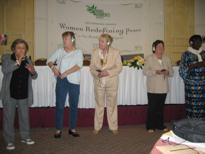
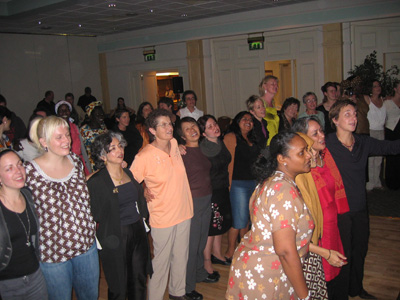
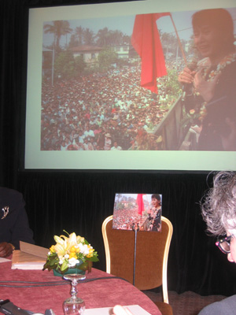
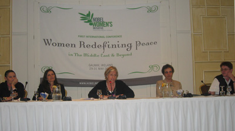

|
|

کمپین یک میلیون امضا در نخستین کنفرانس بین المللی موسسه زنان نوبل
يكشنبه27 خرداد 1386
در اولین کنفرانس بین المللی موسسه زنان نوبل که با عنوان «تعریفی نوین از صلح در خاورمیانه وورای آن » در گالوی/ ایرلند طی روزهای 29 تا 31 می 2007 برگزار شد، کمپین یک میلیون امضا برای تغییر قوانین نیز بخشی را به خود اختصاص یافت.

برندگان صلح نوبل
موسسه زنان نوبل در سال 2006 توسط 6 تن از زنان برنده صلح نوبل: بتی ویلیامز (ایرلند، 1976)، مرید کوری گان مگیور (ایرلند، 1976)، ریگو برتا منچوتام (گواتمالا ، 1992) جودی ویلیامز (امریکا ، 1997)، شیرین عبادی (ایران ، 2003) و وانگاری متایی ( کنیا، 2004) تاسیس شد. گردآمدن این 6 زن، از شمال و جنوب امریکا، اروپا، خاورمیانه و افریقا با این هدف بود که در یک کوشش جمعی واحد با دیگر زنان دنیا برای صلح، عدالت و برابری گام های مهم و قدرتمندی بردارند. آنها معتقدند جایزه صلح نوبل افتخار آمیز اما مهم تر از آن مسئولیت ساز است و به همین دلیل باید به مثابه ابزاری برای حمایت قدرتمندتری از زنان، توجه جهانی را جلب حقوق زنان، صلح و امنیت انسانی کند. به اعتقاد آنان در سیاره ای که همه برایش در حال جنگند، زنان در قلب درگیری ها هستند و باید تلاش وافر به کار برند که قربانی جنگ ها نباشند، آنان آگاهی رسانی و سهیم شدن در کسب آگاهی در حوزه های داخلی، منطقه ای و بین المللی، تاکید بر دیالوگ و ارتباط، توجه و تلاش برای تحقق امنیت انسانی و نه امنیت ملی...را از جمله راه های تغییر می دانند. آنان معتقدند از آنجا که دولت ها همواره با هم هم سو هستند و علیه ملت هایشان عمل می کنند باید حکومتها را فراموش و جوامع مدنی را تقویت کرد. به اعتقاد آنان باید یاد بگیریم که دنیا را تغییر دهیم، ایجاد روابط به معنای قدرتمند کردن ما زنان، دادن صدا به زنان و جلب توجه جهان به صدای زنان است. اولین کنفرانس بین المللی زنان برنده نوبل صلح در این روند برگزار شد.

در کنفرانس زنان برنده صلح نوبل بیش از 80 زن اکتیویست ( 30 نماینده ) از 30 کشور جهان ( ایران ، ایرلند، استرالیا، افغانستان ، امریکا، کانادا، مصر ، اندونزی، فلسطین، اسرائیل، اردن، کنیا، لبنان،لیبی، مکزیکو، پاکستان، سوریه، سومالی، اسپانیا، سودان، سوئیس، تایلند، اوگاندا، الجزیره، سوئد، برمه، عراق ....) شامل زندانیان سیاسی، اعضای سازمان های حقوقی و غیردولتی، روزنامه نگاران و محققان و اکادمیسین ها حضور داشتند تا در خلال گفتگوی استراتژیکی و به مدد خرد جمعی مکانیزم های خشونت علیه زنان در عرصه خصوصی و عمومی را به ویژه در خاورمیانه ردیابی و راه حل یابی کنند. انتخاب خاورمیانه بیش تر از آن رو بود که زنان اکتیوست این منطقه طی سال گذشته به دلیل مبارزاتشان بیشترین درگیری را داشتند.

آنگ سان سوچی برنده نوبل صلح در برما که در حبس خانگی بسر می برد
در این نشست جای دوتن از برندگان صلح نوبل خالی بود : ریگو برتا منچوتام برنده نوبل صلح گواتمالا که به دلیل فعالیت انتخاباتی اش در انتخابات ریاست جمهوری گواتمالا درگیر بود، و آنگ سان سوچی برنده نوبل صلح در برما و رهبر مخالفان حکومت برما که او در 2003 برنده نوبل صلح شد اما تا کنون 20 سال است که در حبس خانگی بسر می برد. به یاد او عکس و دسته گلی روی صندلی گذاشته شده و فیلمی هم از او به نمایش در آمد.

خشونت علیه زنان در مصداق های متنوع حقوقی، جنسی، خانگی، نظامی از محورهای مهم مباحث کنفرانس بود. مسئله چرایی و چگونگی تحمل خشونت از سوی زنان خاورمیانه، نقض حقوق زنان در خاورمیانه، گزارش هایی از خشونت جنسی در دارفور، و تجاوز جنسی به مثابه سلاح جنگی در برما، جلب توجه و یافتن راه حل های فرا مرزی برای مسئله خشونت علیه زنان و راه حل های زنان برای چالش با خشونت،...مطرح شد که از بین سخنرانان ایرانی شیرین عبادی، نیره توحیدی ، ول مقدم ، و شهلا اعزاری دراین باره سخنرانی داشتند. تاثیر قدرت و قدرت تعیین مراکز قدرت، قدرت افکار عمومی و راه های تاثیرگذاری بر آن نیز از دیگر مباحث این نشست ها بود که از ایران ثریا عزیز پناه ایران سخنرانی داشت.

پنل جنسیتی کردن اقدامات صلح آمیزبا حضور فعالان کوزو، فلسطین واسرائیل
تاکید بر استراتژی های زنان و نه ایدئولوژی ها و بیان این استراتژی ها برای برون رفت از موقعیت های تبعیض آمیز در کشورهای گوناگون از مباحث محوری در این کنفرانس بود و در این بین استراتژی های به کار گرفته شده از سوی زنان ایران برای برابری حقوقی، از جمله تجربه کمپین یک میلیون امضا، مقاومت بدون خشونت در فلسطین در سایه همکاری زنان اسرائیلی و فلسطینی، کاروان صلح زنان اوگاندایی، شبکه زنان کوزویی، تدوین گزارش های پی درپی از سوی زنان برمایی، راه اندازی کمپین های ضد سلاح جنگی ...مورد بحث قرار گرفت. در این میان استراتژی زنان ایران در تغییر قوانین تبعیض آمیز حقوقی بسیار مورد توجه بود. بخشی از برنامه روز دوم کنفرانس به معرفی کمپین یک میلیون امضا اختصاص داشت. این برنامه کاملا غیر رسمی و سر میز شام برای حاضران برگزار شد و اساسا یکی از نقاط قوت این کنفرانس تنوع و همچنین هماهنگی موضوع برنامه با شکل ارائه آن بود که همچنین به دلیل حضور فمینیست های اکتیوست با مراسم رسمی و کلیشه ای فاصله داشت. نحوه معرفی کمپین یک میلیون امضا نیز که طی برنامه سخنرانان می ایستادند یا بین حاضران راه می رفتند و سخن می گفتند با روح کلی کمپین یک میلیون امضا مطابقت داشت.

آغاز برنامه با نمایش فیلم کوتاهی از جلوه جواهری درباره جنبش زنان ( با مروری با تجمعات مسالمت آمیز22 خرداد) و کمپین یک میلیون امضا همراه بود که با تشویق بسیار حاضران مواجه شد به طوری که به گفته یک از حاضران با زبان تصویر کمپین را ملموس تر شناختند.
در ادامه برنامه شیرین عبادی تبعیضات قانونی علیه زنان و مبارزات حقوقی زنان در ایران گفت و از اینکه جنبش کمپین می تواند به عنوان یک حرکت مسالمت آمیز و مدنی الگوی خوبی برای دیگر جنبش های زنان در جهان باشد، الگویی که رهبر ندارد. او گفت به خاطر این حرکت مسالمت آمیز بسیاری از اعضای کمپین هزینه هایی چون زندان و حبس و تعلیق گرفته اند و به آنها اتهاماتی چون اقدام علیه امنیت ملی نسبت داده شده است، حال آنکه ما می گوییم و می پرسیم اگر زنی بگوید هوو نمی خواهد امنیت ملی را به خطر انداخته است؟
نیره توحیدی ضمن معرفی کمپین یک میلیون امضا، و نشان دادن دفترچه های تاثیر قوانین، بولتن ها و معرفی وب سایت کمپین حضور کم نظیر نسل جوان در این جنبش را از نقاط عطف آن دانست و گفت این جنبش از مرزهای ایران در گذشته و جوانان ایرانی بسیاری را در دیگر نقاط دنیا (چون رجا بندری که در کنفرانس حضور یافته بود ) به فعالیت واداشته است و خواسته های این کمپین را فراگیر ساخته است. او ضمن توضیح غیر ایدئولوژیک بودن این حرکت برمستقل بودن آن تاکید کرد.
پروین اردلان به عنوان یکی از اعضای کمپین یک میلیون امضا به سوال های مطرح در باره کمپین پاسخ گفت، وی ضمن شرح نحوه جمع آوری امضا و تاثیر این روش در افزایش تصاعدی آگاهی در بین طبقات و طیف های گوناگون زنان ومردان تاکید داشت:«ما را به خانه ها راندند تا از عرصه عمومی حذف شویم، و ما که هیچ فضایی را نادیده نمی گیریم از خانه ها شروع کرده ایم و مطالباتمان را اینگونه عمومی تر می کنیم، بدین ترتیب قدرتمند تر خواهیم شد، به دلیل همین عمومی شدن مطالباتمان حساسیت هم در برابرمان زیاد است .» او در پاسخ به نحوه کمک به کمپین از انتشار بیانیه، جمع آوری امضا، اعلام حمایت از کمپین، انعکاس خواسته های حقوقی زنان ایران در رسانه ها و...نام برد و افزود هرنوع اقدامی از سوی خواهران مان در بیشتر دیده شدن و بیشتر شنیده شدن صدای زنان برای تغییر قوانین در ایران ضروری و موثر است. وی در مورد پیشنهاد دریافت کمک مالی برای کمپین با اشاره بر استقلال مالی کمپین و تاکید بر اینکه از نهادها و سازمان های دولتی یا بین المللی کمک مالی نمی گیریم اشاره داشت که بسیاری از هزینه ها را علاوه بر دریافت کمک های فردی، اعضا از درآمدهای شخصی خودشان تامین می کنند و همه اینها را به طور شفاف درسایت کمپین اعلام می کنیم.
دراین برنامه همچنین نسرین ستوده به عنوان یکی از وکلای کمپین یک میلیون امضا مورد تشویق حضار قرار گرفت.
بحث درباره کمپین یک میلیون امضا در روزهای کنفرانس بشدت درمیان اکتیویست های حاضر داغ بود، برخی پیشتر و به واسطه تلاش های شیرین عبادی در خارج ایران کمپین را می شناختند و بیانیه کمپین را امضا کرده بودند، برخی با اشتیاق فراوان در حمایت از کمپین بیانیه حمایتی را امضا کردند و برخی اعلام کردند که به انتشار و معرفی کمپین در وب سایت های خودشان اقدام خواهند کرد و برخی نیز اعلام کردند که با جمع آوری امضا دراین حرکت اعضای کمپین را یاری خواهند کرد. استقبال از کمپین یک میلیون امضا به حدی بود که حمایت از کمپین یک میلیون امضا به پیشنهاد شرکت کنندگان در فهرست برنامه های پیشنهادی موسسه زنان صلح نوبل نیز قرار گرفت.

تندیس زن و کودک / قربانی جنگ /طرح پیشنهادی شیرین عبادی
در این کنفرانس همچنین پیشنهاد شیرین عبادی برای ادای احترام به قربانیان جنگ که غالبا زن و کودک هستند با استقبال زیادی رو به رو شد . او معتقد است که وقتی در جنگی مردی می میرد مرگ او پایان نبرد است اما برای زن شروع یک زندگی مصیبت بار است. پیشنهاد او این بود که در هر پایتختی یک مجسمه زن و کودک نصب شود تا همانطور که به سربازان جنگ ادای احترام می کنیم به قربانیان جنگ نیز احترام بگذاریم.
تهیه گزارش های سالانه از وضعیت زنان از سوی موسسه زنان نوبل و به ویژه تاسیس تلویزیون بین المللی و مستقل برای زنان از جمله پیشنهادات مورد توجه در کنفرانس بود که رویای آن خاطر بسیاری از زنان حاضر را شیرین کرد.
برگزار کنندگان کنفرانس دوسالانه زنان برنده صلح نوبل ابراز امیدواری کردند که ریگو برتا منچوتام برنده جایزه صلح نوبل گواتمالا برنده انتخابات ریاست جمهوری شود تا بتوانند کنفرانس بعدی خود را دراین کشور برگزار کنند. ارزیابی کنفرانس از سوی شرکت کنندگان بازخوردهای مثبتی داشت و تقریبا بیشتر شرکت کنندگان وجود چنین فضایی و تداوم آن را نه فقط در قالب کنفرانس که در حضور فعال و موثر زنان برنده صلح نوبل در بهره گیری فعال از ابزار جایزه نوبل و همچنین مشارکت دیگر گروه های زنان در تحقق صلح، ارتقای حقوق زنان و امنیت انسانی موثر دانستند.